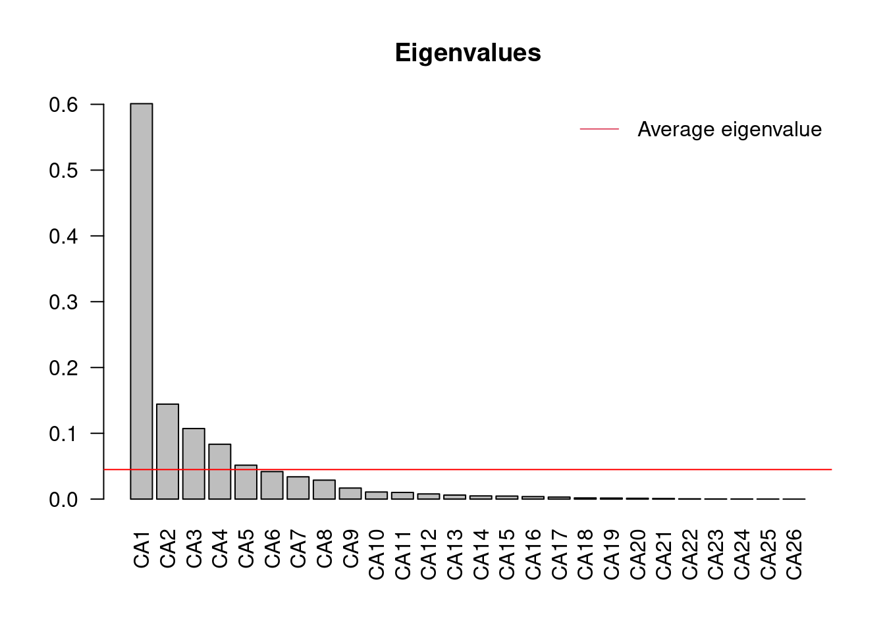
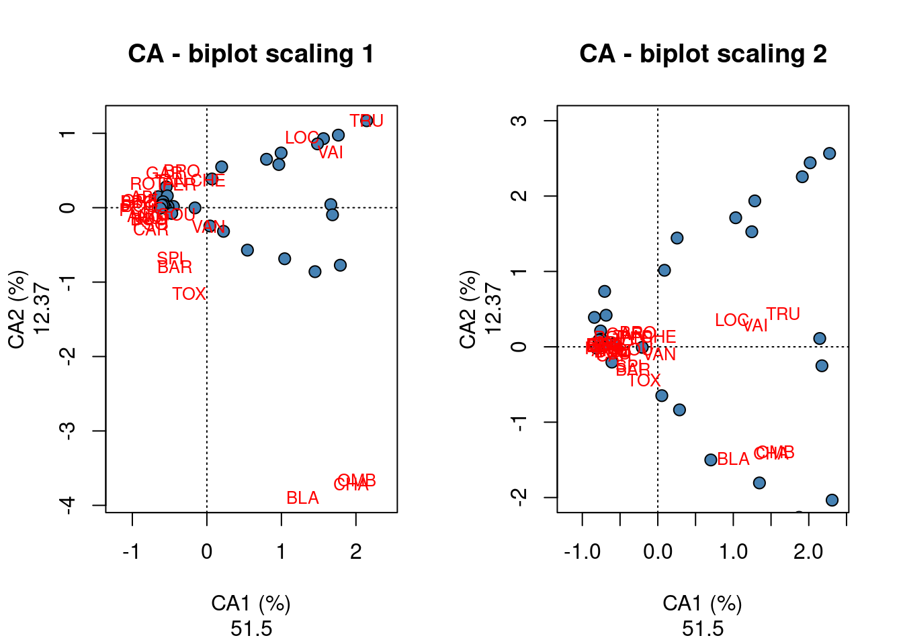
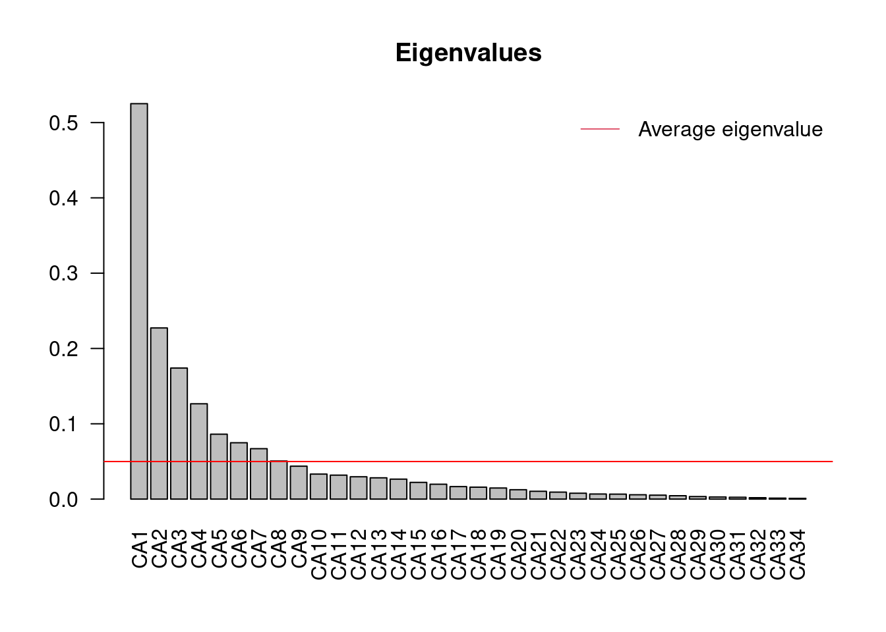
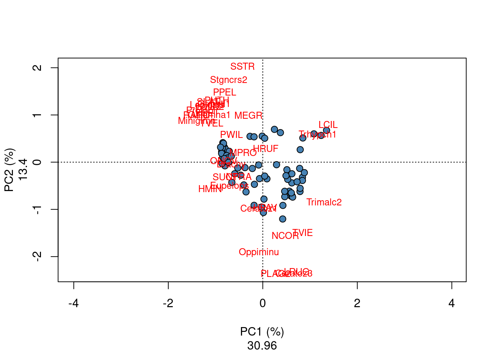

Chapitre 14 Analyse des Correpondances
L’une des hypothèses clefs de la PCA postule que les espèces sont liées les unes aux autres de façon linéaire, et qu’elles répondent de façon linéaire aux gradients écologiques. Ce n’est cependant pas nécessairement le cas dans les données écologiques (e.g. beaucoup d’espèces montrent en effet un distribution unimodale le long des gradients environnementaux). Utiliser une PCA avec des données contenant des espèces à distribution unimodale, ou un grand nombre de zéros (absence des espèces), peut conduire à un phénomène statistique appelé "horseshoe effect" (ou effet fer à cheval) se produisant le long de gradients écologiques. Dans de tels cas, l’Analyse des Correspondances (CA) permet de mieux représenter les données (voir Legendre et Legendre pour plus d’informations). Comme la CA préserve les distances de Chi2 entre objets (tandis que la PCA préserve les distances euclidiennes), cette technique est, en effet, plus appropriée pour ordonner les jeux de données contenant des espèces à distribution unimodale, et a, pendant longtemps, était l’une des techniques les plus employées pour analyser les données d’absence-présence ou d’abondances d’espèces. Lors d’une CA, les données brutes sont d’abord transformées en une matrice Q des contributions cellule-par-cellule à la statistique Chi2 de Pearson, puis la matrice résultante est soumise à une décomposition en valeurs singulières afin de calculer les valeurs propres et vecteurs propres de l’ordination.
Le résultat d’une CA représente donc une ordination dans laquelle les distances de Chi2 entre objets sont préservées (au lieu de la distance euclidienne dans une PCA), le distance de Chi2 n’étant pas influencée par la présence de double-zéros. Ainsi, la CA constitue une méthode d’ordination puissante pour l’analyse des abondances brutes d’espèces (i.e. sans pré-transformation). Contrairement à la PCA, la CA peut être appliquée sur des données quantitatives ou binaires (telles que des abondance ou absence-présence d’espèces). Comme dans une PCA, le critère de Kaiser-Guttman peut être utilisé pour identifier les axes significatifs d’une CA, et les scores des objets le long des axes d’ordination peuvent être extraits pour être utlisés dans des régressions multiples par exemple.
Exécuter une CA sur les données d’abondance d’espèces:
# Effectuer une CA à l'aide de la fonction cca() (NB: cca()
# est utilisée à la fois pour les CA et CCA)
spe.ca <- cca(spe[-8, ])
# Identifier les axes significatifs
ev <- spe.ca$CA$eig
ev[ev > mean(ev)]## CA1 CA2 CA3 CA4 CA5
## 0.60099264 0.14437089 0.10729384 0.08337321 0.05157826n = length(ev)
barplot(ev, main = "Eigenvalues", col = "grey", las = 2)
abline(h = mean(ev), col = "red")
legend("topright", "Average eigenvalue", lwd = 1, col = 2, bty = "n")
D’après cet histogramme, à partir du sixième axe d’ordination CA6, la proportion de variance expliquée diminue sous la proportion moyenne expliquée par l’ensemble des axes. La sortie R de la CA ci-dessous montre également que les cinq premiers axes d’ordination explique une proportion cumulée de variance expliquée de 84.63%.
# summary(spe.h.pca) summary(spe.h.pca, diplay=NULL)Les résultats d’une CA sont présentés sous R de la même façon que ceux d’une PCA. On y observe que le premier axe CA1 explique 51.50% de la variation de l’abondance des espèces tandis que le second axe CA2 explique 12.37% de la variation.
par(mfrow = c(1, 2))
#### scaling 1
plot(spe.ca, scaling = 1, type = "none", main = "CA - biplot scaling 1",
xlab = c("CA1 (%)", round((spe.ca$CA$eig[1]/sum(spe.ca$CA$eig)) *
100, 2)), ylab = c("CA2 (%)", round((spe.ca$CA$eig[2]/sum(spe.ca$CA$eig)) *
100, 2)))
points(scores(spe.ca, display = "sites", choices = c(1, 2), scaling = 1),
pch = 21, col = "black", bg = "steelblue", cex = 1.2)
text(scores(spe.ca, display = "species", choices = c(1), scaling = 1),
scores(spe.ca, display = "species", choices = c(2), scaling = 1),
labels = rownames(scores(spe.ca, display = "species", scaling = 1)),
col = "red", cex = 0.8)
#### scaling 2
plot(spe.ca, scaling = 1, type = "none", main = "CA - biplot scaling 2",
xlab = c("CA1 (%)", round((spe.ca$CA$eig[1]/sum(spe.ca$CA$eig)) *
100, 2)), ylab = c("CA2 (%)", round((spe.ca$CA$eig[2]/sum(spe.ca$CA$eig)) *
100, 2)), ylim = c(-2, 3))
points(scores(spe.ca, display = "sites", choices = c(1, 2), scaling = 2),
pch = 21, col = "black", bg = "steelblue", cex = 1.2)
text(scores(spe.ca, display = "species", choices = c(1), scaling = 2),
scores(spe.ca, display = "species", choices = c(2), scaling = 2),
labels = rownames(scores(spe.ca, display = "species", scaling = 2)),
col = "red", cex = 0.8)
Ces biplots montrent qu’un groupe de sites (à gauche) possède des communautés similaires de poissons caractérisées par de nombreuses espèces dont GAR, TAN, PER, ROT, PSO et CAR; dans le coin supérieur droit, un second groupe de sites se caractérisent par les espèces LOC, VAI et TRU; le dernier groupe de sites dans le coin inférieur droit montrent des communautés abondantes en BLA, CHA et OMB.
Défi 4 Exécuter une CA sur les données d’abondance des espèces d’acariens (données mite). Quels sont les axes importants? Quels groupes de sites pouvez-vous identifier? Quelles espèces sont liées à chaque groupe de sites?
Défi 4 - Solution Votre code devrait s’apparenter à celui-ci:
# CA
mite.spe <- mite
mite.spe.ca <- cca(mite.spe)
# Quels sont les axes importants?
ev <- mite.spe.ca$CA$eig
ev[ev > mean(ev)]## CA1 CA2 CA3 CA4 CA5 CA6 CA7
## 0.52511362 0.22727580 0.17401743 0.12661241 0.08621687 0.07484890 0.06694738
## CA8
## 0.05061316n = length(ev)
barplot(ev, main = "Eigenvalues", col = "grey", las = 2)
abline(h = mean(ev), col = "red")
legend("topright", "Average eigenvalue", lwd = 1, col = 2, bty = "n")
# Résultats summary(mite.spe.ca, display=NULL)
# Biplot
plot(mite.spe.ca, scaling = 1, type = "none", xlab = c("PC1 (%)",
round((mite.spe.ca$CA$eig[1]/sum(mite.spe.ca$CA$eig)) * 100,
2)), ylab = c("PC2 (%)", round((mite.spe.ca$CA$eig[2]/sum(mite.spe.ca$CA$eig)) *
100, 2)))
points(scores(mite.spe.ca, display = "sites", choices = c(1,
2), scaling = 1), pch = 21, col = "black", bg = "steelblue",
cex = 1.2)
text(scores(mite.spe.ca, display = "species", choices = c(1),
scaling = 1), scores(mite.spe.ca, display = "species", choices = c(2),
scaling = 1), labels = rownames(scores(mite.spe.ca, display = "species",
scaling = 1)), col = "red", cex = 0.8)